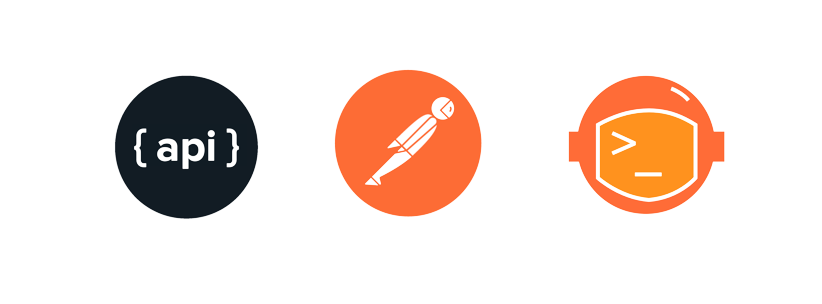
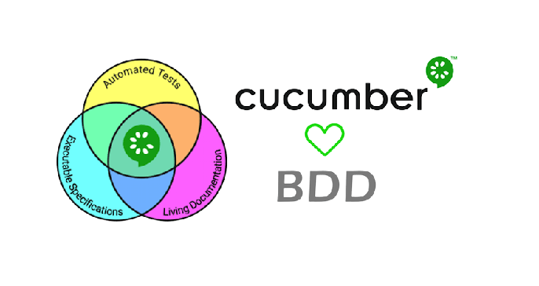

Pinheiro
Analista de Testes - SQA.
Sobre mim
Profissional em área de vendas e gerência administrativa, com mais de 20 anos em atendimento direto ao cliente,negociações, amplo conhecimento em trabalhos com sistemas diversos de controle e gestão de estoque, compras, RH, financeiro, emissão e recebimnento de NF, procurando uma mudança de carreira venho estudando para área de Analista de Qualidade de Software, aprendendo muita coisa e adorando cada aprendizado abaixo descritos.Sou totalmente dedicada e aprendo com muita facilidade.
Meus trabalhos e habilidades
Projetos de Tecnologia com minha participação
8 meses curso
Skills (Certificações e cursos)
Analista QA
Experiências profissionais
Mais de 20 anos em atendimento a clientes e liderança
Minhas Formações
Bacharelado em Administração de Empresas
Em desenvolvimento
Projetos com minha contribuição
Projetos com minha contribuição
6 meses estudos
Estudos para Testes de Softwares
Estudos para Testes de Softwares
Última School
Estudos complementares
Estudos complementares
Meus projetos desenvolvidos na Ultima School (Link nas imagens)
- Projetos para QA em Testes Manuais e em Projetos
- Análise de requisitos e casos de uso para criação de Planos e Roteiros de Testes Manuais,
Execução de testes, Criação, documentação e Gestão de Defeitos.
Projeto Módulo 1


- Análise de Qualidade em Projetos
com HTML, CSS + JavaScript + NodeJS + Git e GiHub
Projeto Módulo 2


- Projetos para testes unitários
com NodeJS + Jest + CICD em GitHub Actions + SQL
Projeto Módulo 3


.png)


- Projetos para Testes Automatizados e Exploratórios
- Testes de Integração para Microsserviços e Banco de Dados | APIs
Postman + Newman + GitHub Actions (Docker)
Projeto Módulo 4

- Testes E2E Automatizados
BDD (Cucumber) + Cypress + Selenium + GitHub Actions
Projeto Módulo 5/ Em desenvolvimento

- Testes Exploratórios para Dispositivos Móveis
Emuladores + Análise de Periféricos + Responsividade e Adaptabilidade das telas
Projeto Módulo 6-Futuro aprendizado